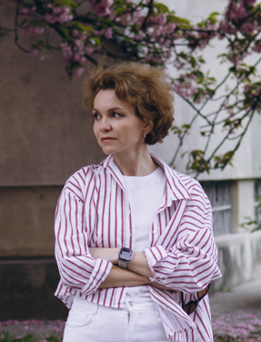

Економіст за освітою, технолог за складом розуму. Поєдную аналітичне мислення із сучасними AI-інструментами: створюю контент, який чіпляє емоційно, та автоматизацію, яка економить десятки годин рутини.

Повний цикл виробництва: сценарій → персонажі → анімація → озвучення → музика. Все нижче створено мною за допомогою AI-інструментів.
Рекламний ролик власної послуги — приклад того, як за 24 години з ідеї народжується готовий анімований ролик у фірмовому акварельному стилі.
Відео, створені для реальних брендів і клієнтів — від товарної реклами до пояснювальної анімації для державної компанії.
Персоналізовані анімовані відкритки — теплий подарунок замість звичайної картки чи букета.
Фото клієнта перетворюється на живий акварельний сюжет — подарунок, який запам'ятовується.
Локальний гумор та впізнавані образи — формат, який чудово працює для просування міст, районів і локальних спільнот.
Пишу тексти, створюю музику та вокал під будь-яку задачу — від джинглів для бренду до повноцінних пісень (Suno/Udio).
Ліричні відео:
Я не просто «пощу картинки» — я будую контент на психології аудиторії: кожен пост має свою емоційну задачу і місце у воронці продажів.
Те, що відрізняє мене від 90% SMM-фахівців: я не лише створюю контент, а й будую системи, які працюють без людини.
Працюю зі «розумним» контентом для серйозних задач — від наукових текстів до бізнес-аналітики.
Магістерські й дисертаційні роботи з психології, економіки, менеджменту: структура, академічний стиль, оформлення за держстандартами, робота з джерелами. Конкретні роботи не публікую з міркувань конфіденційності клієнтів.
Економічні обґрунтування, стратегії повоєнного відновлення галузей (туризм, музейна справа, урбаністика), екологічний менеджмент, наукові презентації. Складне — зрозуміло і красиво.